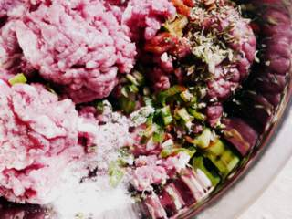

Cómo hacer Hamburguesas Caseras: secreto de mi papá

Además de ser el mejor asador del mundo mundial, mi papá hace unas hamburguesas caseras exquisitas. Un día me confesó su gran secreto: Agrega a la carne picada un chorizo crudo. A él le contó el truco su carnicero. En el barrio se dice que papá intercambió no sé que cosa a cambio. Espero no sea a mamá. O sí. No sé, cosa de ellos. Yo les dejo aquí la receta. Recomiendo hacerlas, salen de verdad riquísimas. Yo las congelo y así tengo hamburguesas disponibles, un poco más sanas que las de caja (bastante en realidad, porque no tienen conservantes, colorantes, saborizantes, sé que carne le pongo y no pago packaging). Hoy con el Doctor nos las devoramos.
Ingredientes
salen unas 10 hamburguesas grandes o 20 mini, como las que hice yo
- 1 kg. de carne picada
- 1 chorizo crudo (chorizo criollo, si estás en España, u otro que te parezca)
- 2 cebollas de verdeo (o 1 cebolla común)
- 2 huevos (opcional)
- 2 dientes de ajo
- 1 cdita. de pimentón
- 1 cda. de perejil picado
- Sal (más o menos 2 cditas) y pimienta
- pimienta